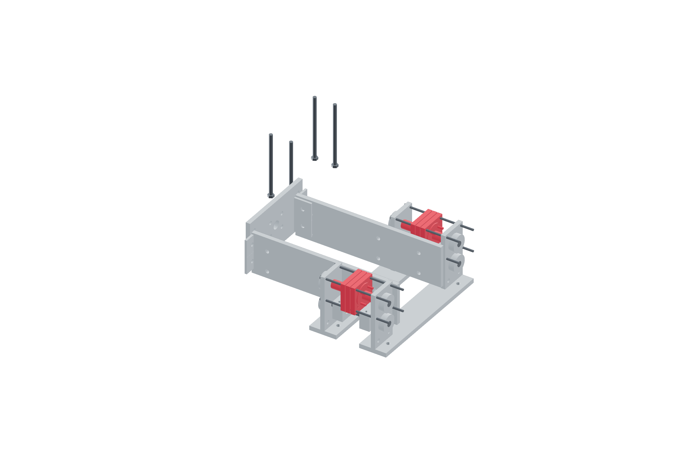

Payload / captured crash mount92 / 179
Close the two captured axial pods
Each pod has a guided central output, opposed seated pressure washers and two springs. Metal shoulders capture either axial sign within ±1.0 mm.
Add2 shuttles / 4 shoulders / 4 boss halves · 4 springs / pressure washers · 8 M3 × 100 · 8 M3 × 30
Tools / setupGraded spring record · caliper · continuity meter · support

- Grade the actual four crash springs for free length, solid length and rate over the used preload region.
- Install bronze-guided boss/shuttle assemblies, seated pressure washers and opposed spring pairs in CAD order.
- Build the metal shoulders and end plates on matched metal ties/spacers, preserving ±1.0 mm capture.
- Set light initial directional preload; final adjustment includes the actual gun/cable gravity baseline and measured 20–30 N added nozzle release.
Ready when
Both signs remain captured, springs stay clear of coil bind and every spring reaction returns through fixed metal shoulders. A floating reaction, rigid bypass or spring-bind approach fails the pod. Rebuild that metal/spring path before mounting the release plate.